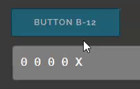

course itgid.info
Для застосування теми "ніч" видаліть коментар з night.css.
Умова: скрізь де не сказано про спосіб задання типу даних — тип задається явно.
Створіть масив чисел ar_1 що містить елементи 77, 88, 99 в такому ж порядку як зазначено. Тип вкажіть самостійно. Виведіть у консоль.
Створіть масив чисел ar_2 що містить елементи 99, 100, 110 в такому ж порядку як зазначено. Тип вкажіть самостійно. Виведіть у .out-2, розділювач — знак підкреслення. В цьому і наступних завданнях з розділювачем прийнятною буде відповідь і 99_100_110_ і 99_100_110.
Створіть масив ar_3, що складається з рядків 'Hello', 'Hi', 'Trust'. Тип даних вкажіть самостійно. Напишіть функцію f03, яка фільтрує масив ar3, повертаючи новий масив, в якому знаходяться елементи довжиною не менше 4 символів.
Створіть масив ar_4 що складається з чисел. Заповніть значеннями самостійно. Напишіть функцію, яка приймає масив як аргумент і повертає суму елементів масиву. Тип даних функції напишіть самостійно.
Створіть функцію, яка виводить масив ar_5 у .out-5. Вивід здійснюйте циклом. Розділювач — дефіс.
Напишіть функцію f06, яка створює масив що складається лише з чисел масиву ar_06 та повертає його.
Створіть readonly масив ar_07 що містить лише два значення true, false. Тип задайте самостійно. Виведіть масив у консоль.
Створіть функцію, яка зчитує число з input.i-8 і якщо число парне — робить його push у масив ar_08, якщо непарне — unshift у масив. Масив створіть глобально по відношенню до функції. Результат виводьте у .out-8, розділювач — підкреслення.
Створіть функцію, яка приймає ціле число n як аргумент і повертає масив довжиною n, заповнений випадковими числами від 0 до 10.
Створіть функцію, яка приймає масив ar_10 і повертає два масиви, перший з яких містить лише парні числа з вихідного масиву, а другий — лише непарні числа.
Створіть функцію, яка виводить у .out-11 одновимірний масив ar_11. Якщо в масиві зустрічається число 1, то при виводі воно замінюється на 'X' — латинську X у верхньому регістрі. Розділювач — пробіл.
Створіть функцію, яка виводить у .out-12 одновимірний масив ar_12. Якщо в масиві зустрічається число 1, то при виводі воно замінюється на 'X' — латинську X у верхньому регістрі. Розділювач — пробіл. При натисканні кнопки значення 1 в масиві має зміщуватися вправо, а старе положення замінюватися на 0. Положення одиниці визначається лічильником count.
Приклад роботи на gif:

Створіть функцію яка в масиві ar_13 замінює числа 1 на 0, а 0 на 1. Виводить масив на сторінку, розділювач між елементами — пробіл, розділювач між рядками — перенос рядка.
Створено кортеж k16. Напишіть функцію, яка змінює в ньому числа — додає до кожного числа по 10. Виведіть у .out-16 суму елементів кортежу.
Створено кортеж k17. Напишіть функцію, яка виводить у .out-17 суму елементів кортежу. Зверніть увагу — кількість елементів кортежу при перевірці може змінюватися.
Створено кортеж k18 readonly типу boolean, що містить елементи true, false. Напишіть функцію f18, яка виводить у .out-18 значення кортежу через пробіл. Кортеж оголошено глобально по відношенню до функції.
Створено кортеж k19 readonly типу boolean, що містить елементи true, false. Напишіть функцію f19, яка виводить у .out-19 довжину кортежу. Кортеж оголошено глобально по відношенню до функції.
Створіть кортеж k20, що містить масив чисел [2, 3]. Виведіть у консоль.